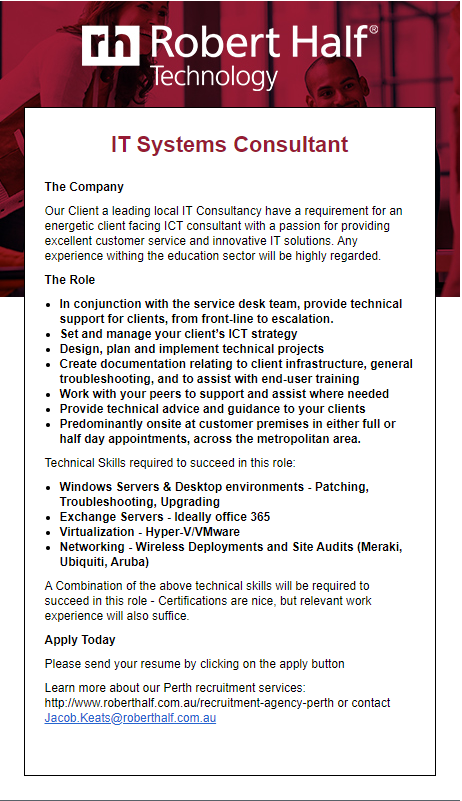

My Ideal Job - IT Systems Consultant
A IT systems consultant is required to provide businesses with innovative IT solutions enabling them to achieve their end goals. I find this extremely appealing as I enjoy problem solving and am always able to find solutions to a problem.
In order to be an applicant for this Job I will need excellent problem solving, interpersonal, time management and organisational skills. These skills are a requirement as you must interact with customers and interpret what their business needs in order to reach the end goal.
To qualify for this job experience is a large impacting factor which is followed by a certification in IT. The advertisement also lists various technical skills which are required in order to succeed they are:
- Windows Servers & Desktop environments - Patching, Troubleshooting, Upgrading
- Exchange Servers - Ideally office 365
- Virtualization - Hyper-V/VMware
- Networking - Wireless Deployments and Site Audits (Meraki, Ubiquiti, Aruba)
I am skilled in problem solving, organisation, and leadership which I have obtained from my current job as a team lead. I also have an extensive understanding of IT and the various solutions that businesses use as part of their infrastructure.
Whilst working at my current job (Install Team Lead) I plan to obtain a bachelor’s degree in Information technology and work on my communication skills which will enable me to communicate clearly with clients in the IT industry. Whilst studying my degree I also plan to increase my knowledge and understanding of ICT strategy’s, Technical projects, creating documentation, and providing technical advice in a clear and concise manner.
A link to the advertisement can be found here.